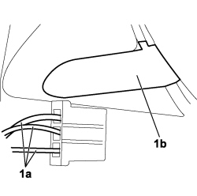
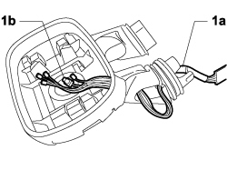

7005R90 DOOR MIRROR CABLE LOOM - R.R. OR REPLACE
- Path
- Procedures > 70 FITTINGS > 7005 PASSENGER COMPARTMENT FRONT SIDE DOORS > 7005R front door mirrors > 7005R90 DOOR MIRROR CABLE LOOM - R.R. OR REPLACE
- Kind
- repair procedure (removal / refitting; the operation number is the code)
- Applies to
- engines: 1.4 8v, 1.6 16v, 1.3 JTD 16V, 1.9 JTD 8V; all production periods
- Interactive page
- https://sloeber94.github.io/elrnDB-fDbl/en/#/223000192
Applies to: engines: 1.4 8v, 1.6 16v, 1.3 JTD 16V, 1.9 JTD 8V; production: da 12/03; only with equipment: MY 2005
 Removing
Removing
 Refitting
Refitting- Turn the ignition key to the OFF position.
- Lift the bonnet
- Disconnect the negative battery terminal.
Description | Connector | |
|---|---|---|
BATTERY |
Op. 7005R37 DOOR MIRROR COVER (ONE), LEFT OR RIGHT - R.R
Op. 7005R35 DOOR MIRROR REFLECTOR (ONE), LEFT OR RIGHT - R.R
Op. 7005R36 DOOR MIRROR ADJUSTMENT MOTOR (ONE), LEFT OR RIGHT - R.R
Op. 7005R30 ELECTRICALLY CONTROLLED DOOR MIRROR (ONE) - R+R
1. Working at the bench, mark the cables (1a), withdraw the terminal and prise up cover (1b).

Applies to: engines: 1.4 8v, 1.6 16v, 1.3 JTD 16V, 1.9 JTD 8V; production: da 12/03; only with equipment: MY 2005
1. Fit a probe to facilitate re-insertion of wiring harness (1a) and withdraw from its seat complete with outside air temperature sensor (1b).

Applies to: engines: 1.4 8v, 1.6 16v, 1.3 JTD 16V, 1.9 JTD 8V; production: da 12/03; only with equipment: MY 2005
Refitting
Removing- Check the electrical continuity of the wiring harness.
- Use the probe inserted previously to position the wiring harness in its seat complete with the external air temperature sensor.
- Reposition the terminals in the order marked previously.
- Fit the cover in its housing.
Op. 7005R30 ELECTRICALLY CONTROLLED DOOR MIRROR (ONE) - R+R
Op. 7005R36 DOOR MIRROR ADJUSTMENT MOTOR (ONE), LEFT OR RIGHT - R.R
Op. 7005R35 DOOR MIRROR REFLECTOR (ONE), LEFT OR RIGHT - R.R
Op. 7005R37 DOOR MIRROR COVER (ONE), LEFT OR RIGHT - R.R
- Connect the negative battery terminal.
Description | Connector | |
|---|---|---|
BATTERY |
Topics linked from this page (5)
- 7005R30 electrically controlled door mirror (one) - r+r
- 7005R35 door mirror reflector - r r
- 7005R36 door mirror motor - r r
- 7005R37 door mirror boot - r r
- A001 BATTERY